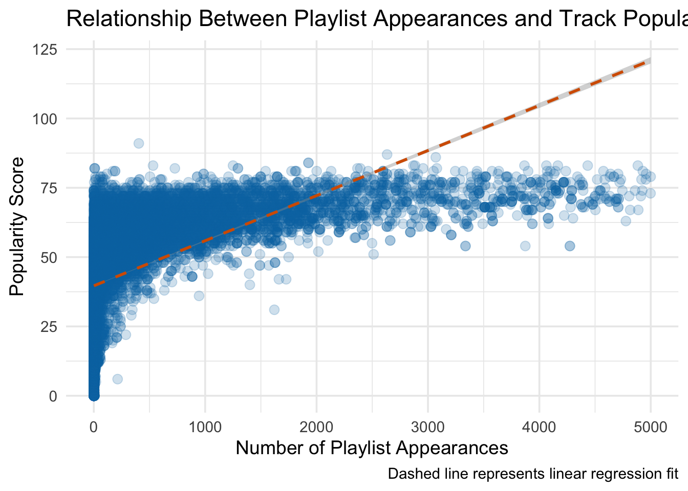
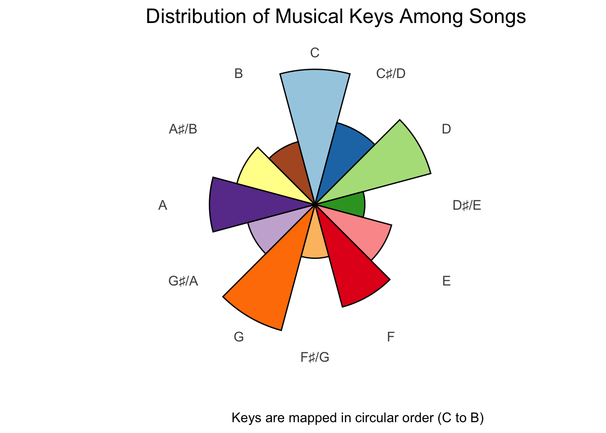
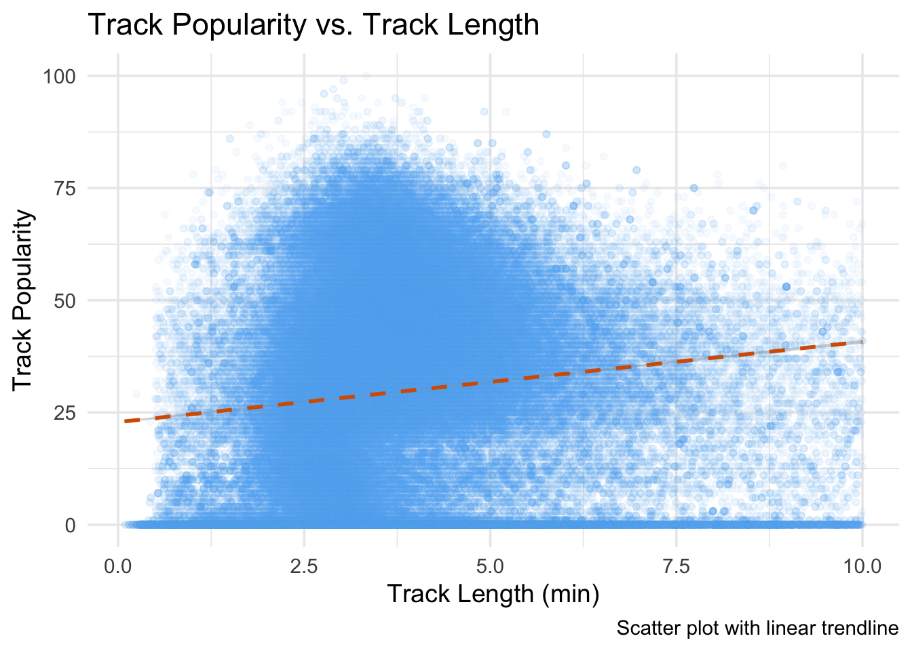
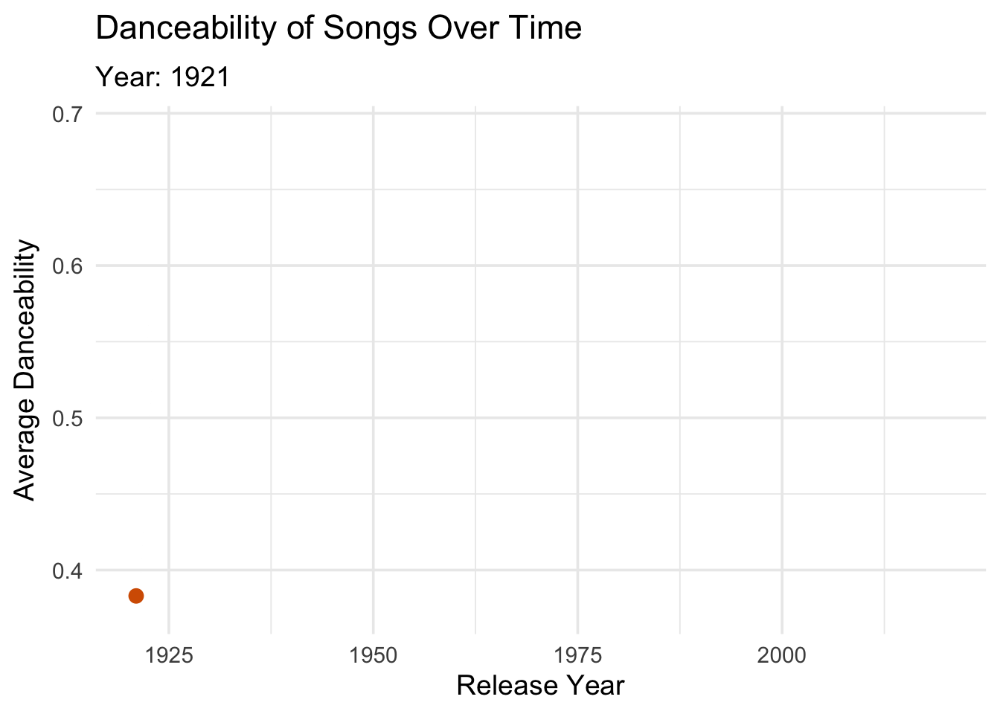
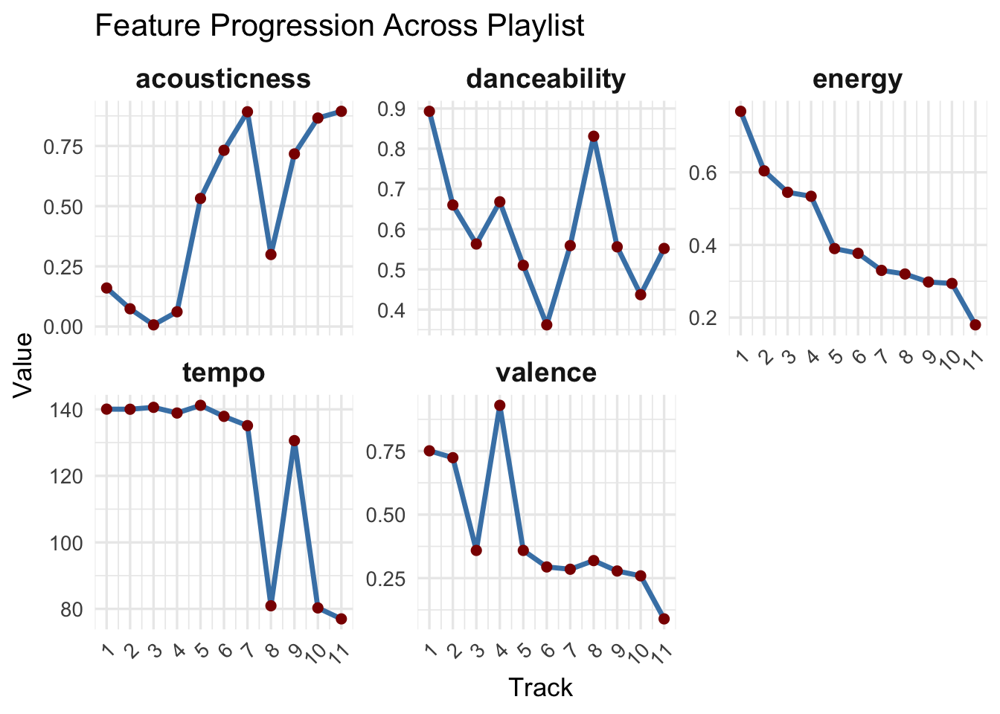

Creating the Ultimate Playlist
Introduction
In this project, we will explore the world of music analytics aiming to create The Ultimate Playlist. In detail, we will use two data exports available from Spotify to identify the most popular songs on the platform, and also the characteristics of those songs. By using this data, we will create the ultimate playlist.
Data Acquisition
The two Spotify data exports we will use are a data set of songs and their characteristics, and an export of user-created playlists.
Song Characteristics
First, we write a function called load_songs to download the Spotify song dataset from https://raw.githubusercontent.com/gabminamedez/spotify-data/refs/heads/master/data.csv and then read it into R.
Code
# Ensure packages are loaded
library(dplyr)
# Task 1: Song Characteristics Dataset
load_songs <- function() {
# Define directory and file paths
dir_path <- "data/mp03"
file_name <- "songs.csv"
file_path <- file.path(dir_path, file_name)
url <- "https://raw.githubusercontent.com/gabminamedez/spotify-data/refs/heads/master/data.csv"
# Create directory if it doesn't exist
if (!dir.exists(dir_path)) {
dir.create(dir_path, recursive = TRUE)
}
# Download the file if it doesn't exist
if (!file.exists(file_path)) {
download.file(url, destfile = file_path, method = "auto")
}
# Read CSV into a data frame
songs_df <- read.csv(file_path, stringsAsFactors = FALSE)
# Return a well-formatted data frame
return(songs_df)
}The artists column of this data set is a bit oddly formatted: it contains multiple artists in a “list-type” format. We use the following code to split the artists across multiple rows.
Code
# Split the artists
library(tidyr)
library(stringr)
clean_artist_string <- function(x){
str_replace_all(x, "\\['", "") |>
str_replace_all("'\\]", "")
}
SONGS <- load_songs()
SONGS_CLEAN <- SONGS |>
separate_longer_delim(artists, "', '") |>
mutate(artist = clean_artist_string(artists)) |>
select(-artists)Playlists
Next, we will download the Spotify Playlist dataset from spotify_million_playlist_dataset by writting a function called load_playlists to download all files from this repository (data1 directory). We store them locally, read them into R, and then concatenate them into a list object.
Code
# Task 2: Playlist dataset
# Write a function to download playlists
load_playlists <- function(data_dir = "spotify_data", base_url = "https://raw.githubusercontent.com/DevinOgrady/spotify_million_playlist_dataset/main/data1/",
slices = seq(0, 999000, by = 1000)) {
if (!dir.exists(data_dir)) {
dir.create(data_dir)
}
playlists <- list()
for (start in slices) {
end <- start + 999
file_name <- sprintf("mpd.slice.%d-%d.json", start, end)
file_path <- file.path(data_dir, file_name)
file_url <- paste0(base_url, file_name)
# Check if file exists on the server
response <- tryCatch({
httr::HEAD(file_url) # Send a HEAD request to check if the file exists
}, error = function(e) {
return(NULL)
})
if (is.null(response) || response$status_code != 200) {
message(sprintf("File not found: %s", file_name))
next # Skip this file if it doesn't exist
}
# Download the file if not already downloaded
if (!file.exists(file_path)) {
message(sprintf("Downloading %s...", file_name))
download.file(file_url, destfile = file_path, mode = "wb")
} else {
message(sprintf("Already downloaded: %s", file_name))
}
# Read JSON file and extract playlists
json_data <- jsonlite::fromJSON(file_path)
playlists[[file_name]] <- json_data$playlists
}
return(playlists)
}
all_playlists <- load_playlists()Then, by using functions from the tidyr, purrr, and dplyr packages, we convert the playlist data into the rectangular format as a table of the following columns:
- Playlist Name (
playlist_name) - Playlist ID (
playlist_id) - Playlist Position (
playlist_position) - Playlist Followers (
playlist_followers) - Artist Name (
artist_name) - Artist ID (
artist_id) - Track Name (
track_name) - Track ID (
track_id) - Album Name (
album_name) - Album ID (
album_id) - Duration (
duration)
where each row is one “track” from a playlist. We also clean up the ID columns by striping the spotify:type: prefix.
Code
# Task 3: Rectangle the playlist data
library(tidyverse)
# Flatten all playlists into a single data frame
tidy_playlists <- all_playlists |>
# Combine all playlist chunks
bind_rows() |>
# Use purrr::map_df to unnest the 'tracks' list-column
mutate(playlist_name = name,
playlist_id = pid,
playlist_position = row_number(),
playlist_followers = num_followers) |>
select(playlist_name, playlist_id, playlist_position, playlist_followers, tracks) |>
unnest(tracks, keep_empty = TRUE) |>
transmute(
playlist_name,
playlist_id,
playlist_position,
playlist_followers,
artist_name = artist_name,
artist_id = artist_uri,
track_name = track_name,
track_id = track_uri,
album_name = album_name,
album_id = album_uri,
duration = duration_ms
)
# strip the predix in id columns
strip_spotify_prefix <- function(x){
library(stringr)
str_extract(x, ".*:.*:(.*)", group=1)
}
PLAYLIST <- tidy_playlists |>
mutate(artist_id = strip_spotify_prefix(artist_id),
track_id = strip_spotify_prefix(track_id),
album_id = strip_spotify_prefix(album_id))Initial Exploration
Since our data is imported and cleaned, let’s do some initial exploration with the following questions.
- How many distinct tracks and artists are represented in the playlist data?
Code
# Task 4: initial exploration
# How many distinct tracks and artists are represented in the playlist data?
# Count distinct tracks
distinct_tracks <- PLAYLIST |>
distinct(track_id) |>
nrow()
# Count distinct artists
distinct_artists <- PLAYLIST |>
distinct(artist_id) |>
nrow()
# Output results
cat("Distinct Tracks:", distinct_tracks, "\n")Distinct Tracks: 1200590 Code
cat("Distinct Artists:", distinct_artists, "\n")Distinct Artists: 173604 - What are the 5 most popular tracks in the playlist data?
Code
# What are the 5 most popular tracks in the playlist data?
most_popular_tracks_5 <- PLAYLIST |> group_by(track_id, track_name) |>
summarize(n_track = n(), .groups='drop') |>
slice_max(n_track, n=5)
library(knitr)
kable(most_popular_tracks_5, cap='5 most popular tracks in the playlist data')| track_id | track_name | n_track |
|---|---|---|
| 7KXjTSCq5nL1LoYtL7XAwS | HUMBLE. | 13314 |
| 1xznGGDReH1oQq0xzbwXa3 | One Dance | 12179 |
| 7yyRTcZmCiyzzJlNzGC9Ol | Broccoli (feat. Lil Yachty) | 11845 |
| 7BKLCZ1jbUBVqRi2FVlTVw | Closer | 11656 |
| 3a1lNhkSLSkpJE4MSHpDu9 | Congratulations | 11310 |
- What is the most popular track in the playlist data that does not have a corresponding entry in the song characteristics data?
Code
# What is the most popular track in the playlist data that does not have a corresponding entry in the song characteristics data?
most_popular_missing <- PLAYLIST |>
group_by(track_id, track_name) |>
summarize(n_track = n(), .groups='drop') |>
anti_join(SONGS_CLEAN, by=c('track_id'='id')) |>
slice_max(n_track, n=1)
kable(most_popular_missing, cap='Most popular track in the playlist data that does not have a corresponding entry in the song characteristics data')| track_id | track_name | n_track |
|---|---|---|
| 1xznGGDReH1oQq0xzbwXa3 | One Dance | 12179 |
- According to the song characteristics data, what is the most “danceable” track? How often does it appear in a playlist?
Code
# According to the song characteristics data, what is the most “danceable” track? How often does it appear in a playlist?
name_danceable <- SONGS_CLEAN |>
slice_max(danceability, n=1) |>
pull(name)
n_id <- PLAYLIST |>
distinct(playlist_id) |>
nrow()
most_danceable_track <- PLAYLIST |>
filter(track_name == name_danceable) |>
group_by(track_name) |>
summarize(freqency = n() / n_id )
kable(most_danceable_track, cap='Most danceable track and how often it appears in a playlist')| track_name | freqency |
|---|---|
| Funky Cold Medina | 0.0007535 |
- Which playlist has the longest average track length?
Code
# Which playlist has the longest average track length?
playlist_longest_track_length <- PLAYLIST |>
group_by(playlist_id, playlist_name) |>
summarize(avg_track_len = mean(duration), .groups='drop') |>
slice_max(avg_track_len, n=1)
kable(playlist_longest_track_length, cap='Playlist with the longest average track length')| playlist_id | playlist_name | avg_track_len |
|---|---|---|
| 462471 | Mixes | 3868511 |
- What is the most popular playlist on Spotify?
Code
# What is the most popular playlist on Spotify?
most_popular_playlist <- PLAYLIST |>
slice_max(playlist_followers, n=1) |>
distinct(playlist_id, playlist_name)
kable(most_popular_playlist, cap='Most popular playlist on Spotify')| playlist_id | playlist_name |
|---|---|
| 746359 | Breaking Bad |
Identifying Characteristics of Popular Songs
Now, we will visually explore our data by answering the following questions using one or more visualizations.
- Is the
popularitycolumn correlated with the number of playlist appearances? If so, to what degree?
Code
# Task 5: visually identifying characteristics of pupular songs
# inner join to combine datasets
# Combine playlist and song characteristics using an inner join
combined_data <- PLAYLIST |>
inner_join(SONGS_CLEAN, by = c("track_id" = "id"))
# Is the popularity column correlated with the number of playlist appearances? If so, to what degree?
# Count how many times each track appears in the playlist
playlist_counts <- PLAYLIST |>
group_by(track_id) |>
summarize(playlist_appearances = n(), .groups = "drop")
# Join with song characteristics to get popularity
popularity_data <- playlist_counts |>
inner_join(SONGS_CLEAN, by = c("track_id" = "id")) |>
select(track_id, playlist_appearances, popularity) |>
filter(playlist_appearances < 5000)
# Create scatter plot with linear regression line
ggplot(popularity_data,
aes(x = playlist_appearances,
y = popularity)) +
geom_point(color = "#0072B2", alpha = 0.2, size = 3) +
geom_smooth(method = "lm", se = TRUE, color = "#D55E00", linetype = "dashed") +
theme_minimal(base_size = 14) +
labs(
title = "Relationship Between Playlist Appearances and Track Popularity",
x = "Number of Playlist Appearances",
y = "Popularity Score",
caption = "Dashed line represents linear regression fit"
)
Code
# Compute Pearson correlation
correlation <- cor(popularity_data$playlist_appearances, popularity_data$popularity)
cat("Correlation between playlist appearances and popularity:", round(correlation, 3))Correlation between playlist appearances and popularity: 0.448A positive correlation suggests that more frequently included tracks tend to be more popular. The correlation coefficient (Pearson’s r) tells us the strength is moderate.
~0.1–0.3 = weak
~0.3–0.5 = moderate
~0.5–1.0 = strong
For the following questions, we select popularity = 60 as a threshold that defines a “popular” song.
- In what year were the most popular songs released?
Code
# In what year were the most popular songs released?
library(dplyr)
library(ggplot2)
library(plotly)
songs_per_year <- SONGS_CLEAN |>
filter(popularity >= 60) |>
select(id, name, year) |>
group_by(year) |>
summarize(num_songs_released = n(), .groups='drop')
# Create static ggplot
p <- ggplot(songs_per_year, aes(x = factor(year), y = num_songs_released)) +
geom_bar(stat = "identity", fill = "#56B4E9", color = "#0072B2", alpha = 0.7) +
theme_minimal(base_size = 14) +
labs(
title = "Number of Popular Songs Released by Year",
x = "Release Year",
y = "Number of Popular Songs Released",
caption = "Bar plot showing the number of popular songs released each year"
) +
theme(
axis.text.x = element_text(angle = 45, hjust = 1)
) +
scale_x_discrete(breaks = function(x) x[as.numeric(x) %% 5 == 0]) # Show every 5th year
# Convert ggplot to interactive plotly
ggplotly(p)Code
## Find the year(s) with the highest number of popular song releases
most_songs_year <- songs_per_year |>
filter(num_songs_released == max(num_songs_released)) |>
pull(year)
cat("The year with the most popular songs released is:", most_songs_year)The year with the most popular songs released is: 2019- In what year did danceability peak?
Code
# In what year did danceability peak?
popular_songs <- SONGS_CLEAN |>
filter(popularity >= 60)
dan_by_year <- popular_songs |>
group_by(year) |>
summarize(avg_dan = mean(danceability), .groups='drop')
# Line plot of average danceability by year
p_2 <- ggplot(dan_by_year, aes(x = year, y = avg_dan)) +
geom_line(color = "#009E73", size = 1.3) +
geom_point(color = "#009E73", size = 2.5) +
theme_minimal(base_size = 14) +
labs(
title = "Average Danceability of Songs by Release Year",
x = "Release Year",
y = "Average Danceability",
caption = "Danceability score ranges from 0 (not danceable) to 1 (very danceable)"
) +
theme(axis.text.x = element_text(angle = 45, hjust = 1))
ggplotly(p_2)Code
# Find year(s) with peak danceability
peak_year <- dan_by_year |>
filter(avg_dan == max(avg_dan)) |>
pull(year)
cat("Danceability peaked in the year:", peak_year)Danceability peaked in the year: 1955- Which decade is most represented on user playlists?
Code
# Which decade is most represented on user playlists? (The integer division (%/%) operator may be useful for computing decades from years.)
# Add a decade column
decade_counts <- combined_data |>
mutate(decade = (year %/% 10) * 10) |>
group_by(decade) |>
summarise(song_count = n(), .groups = "drop")
most_common_decade <- decade_counts |>
filter(song_count == max(song_count)) |>
pull(decade)
cat("The most represented decade on user playlists is:", most_common_decade)The most represented decade on user playlists is: 2010Code
# Add a column to control bar color
decade_counts <- decade_counts |>
mutate(
highlight = ifelse(decade == most_common_decade, "Most Popular", "Other")
)
p_3 <- ggplot(decade_counts, aes(x = factor(decade), y = song_count/1000, fill = highlight)) +
geom_bar(stat = "identity", color = "black", width = 0.7) +
scale_fill_manual(values = c("Most Popular" = "#D55E00", "Other" = "#0072B2")) +
theme_minimal(base_size = 14) +
labs(
title = "Number of Songs on Playlists by Decade",
x = "Decade",
y = "Number of Songs (thousand)",
fill = "",
caption = "The most popular decade is highlighted"
) +
theme(
axis.text.x = element_text(angle = 45, hjust = 1),
legend.position = "top"
)
ggplotly(p_3)- Create a plot of key frequency among songs.
Code
# Create a plot of key frequency among songs. Because musical keys exist in a ‘cycle’, your plot should use polar (circular) coordinates.
# Map integer keys to note names
key_labels <- c(
"C", "C♯/D", "D", "D♯/E", "E", "F",
"F♯/G", "G", "G♯/A", "A", "A♯/B", "B"
)
# Add a key name column
key_data <- SONGS_CLEAN |>
mutate(key_name = factor(key_labels[key + 1], levels = key_labels)) # +1 for 0-indexing
key_counts <- key_data |>
group_by(key_name) |>
summarise(song_count = n(), .groups = "drop")
ggplot(key_counts, aes(x = key_name, y = song_count, fill = key_name)) +
geom_bar(stat = "identity", color = "black", width = 1) +
coord_polar(start = -pi/12) + # rotate so C is at the top
scale_fill_manual(values = RColorBrewer::brewer.pal(12, "Paired")) +
theme_minimal(base_size = 14) +
labs(
title = "Distribution of Musical Keys Among Songs",
x = "",
y = "",
caption = "Keys are mapped in circular order (C to B)"
) +
theme(
axis.text.y = element_blank(),
axis.ticks = element_blank(),
panel.grid = element_blank(),
legend.position = "none"
)
- What are the most popular track lengths?
Code
# What are the most popular track lengths? (Are short tracks, long tracks, or something in between most commonly included in user playlists?)
# Convert milliseconds to minutes
track_lengths <- combined_data |>
filter(!is.na(duration_ms)) |>
mutate(duration_min = duration_ms / 60000) |>
filter(duration_min <= 10)
# Get the most frequent duration range
mode_duration <- track_lengths |>
mutate(duration_rounded = round(duration_min, 1)) |>
count(duration_rounded) |>
arrange(desc(n)) |>
slice(1) |>
pull(duration_rounded)
# Add a line to highlight the peak
p_5 <- ggplot(track_lengths, aes(x = duration_min)) +
geom_histogram(binwidth = 0.25, fill = "#56B4E9", color = "black", alpha = 0.8) +
geom_vline(xintercept = mode_duration, color = "#D55E00", linetype = "dashed", linewidth = 1.2) +
annotate("text", x = mode_duration, y = 1560000, label = paste("Most Common:", mode_duration, "min"),
vjust = -0.5, hjust = 0.1, color = "#D55E00", fontface = "bold", size = 5) +
theme_minimal(base_size = 14) +
labs(
title = "Distribution of Track Durations in Playlists",
x = "Track Length (minutes)",
y = "Number of Tracks",
caption = "Dashed line indicates the most common track length"
)
ggplotly(p_5)We will also pose and visually answer two more other exploratory questions here.
- What is the relationship between track popularity and track length?
- How has the danceability of songs changed over time?
Code
# Plotting the relationship between track popularity and length
popularity_length <- SONGS_CLEAN |>
mutate(duration_min = duration_ms / 60000) |>
filter(duration_min <= 10)
ggplot(popularity_length, aes(x = duration_min, y = popularity)) +
geom_point(alpha = 0.05, color = "#56B4E9") +
geom_smooth(method = "lm", color = "#D55E00", linetype = "dashed", size = 1) +
theme_minimal(base_size = 14) +
labs(
title = "Track Popularity vs. Track Length",
x = "Track Length (min)",
y = "Track Popularity",
caption = "Scatter plot with linear trendline"
) +
theme(axis.text.x = element_text(angle = 0, hjust = 0.5))
Code
# Compute Pearson correlation
corr_pop_len <- cor(popularity_length$duration_min, popularity_length$popularity)
cat("Correlation between track length and popularity:", round(corr_pop_len, 3))Correlation between track length and popularity: 0.119Code
# How has the danceability of songs changed over time?
library(dplyr)
library(ggplot2)
library(gganimate)
# Prepare the data: average danceability by year
danceability_trend <- SONGS_CLEAN |>
group_by(year) |>
summarise(avg_danceability = mean(danceability), .groups = "drop") |>
arrange(year)
# Animated line chart
ggplot(danceability_trend, aes(x = year, y = avg_danceability)) +
geom_line(color = "#0072B2", linewidth = 1.5) +
geom_point(color = "#D55E00", size = 3) +
theme_minimal(base_size = 14) +
labs(
title = "Danceability of Songs Over Time",
subtitle = "Year: {frame_along}",
x = "Release Year",
y = "Average Danceability"
) +
transition_reveal(year)
Building a Playlist from Anchor Songs
Before building our playlist, we pick Adele’s “Someone Like You” as our “anchor” song. Let’s check it out here.
We will find songs that work well in a playlist with the anchor song using the following four heuristics and one of my own. We will identify 20 candidates, 8 of which are not “popular” based on the threshold we set above (popularity <= 60).
What other songs commonly appear on playlists along side this song?
What other songs are in the same key and have a similar tempo? (This makes it easy for a skilled DJ to transition from one song to the next.)
What other songs were released by the same artist?
What other songs were released in the same year and have similar levels of
acousticness,danceability, etc.?What other songs have similar mood (energy + valence)?
Code
# Task 6: finding related songs
# Load libraries
library(dplyr)
library(readr)
# Define anchor song ID
anchor_id <- "4kflIGfjdZJW4ot2ioixTB"
# Get anchor song details
anchor_song <- SONGS_CLEAN |> filter(id == anchor_id)
# Define Similar numeric range filter
range_filter <- function(df, col, val, tol) {
df |> filter(abs(.data[[col]] - val) <= tol)
}
# Heuristic 1: Co-occurrence in playlists
co_songs <- PLAYLIST |>
filter(playlist_id %in% (
PLAYLIST |>
filter(track_id == anchor_id) |>
pull(playlist_id)
)) |>
filter(track_id != anchor_id) |>
count(track_id, sort = TRUE) |>
top_n(10, wt = n) |>
pull(track_id)
# Heuristic 2: Same key & similar tempo (±5%)
tempo_tol <- 0.05 * anchor_song$tempo
key_tempo_match <- SONGS_CLEAN |>
filter(key == anchor_song$key) |>
range_filter("tempo", anchor_song$tempo, tempo_tol) |>
pull(id)
# Heuristic 3: Same artist
same_artist <- SONGS_CLEAN |>
filter(artist == anchor_song$artist, id != anchor_id) |>
pull(id)
# Heuristic 4: Same year & similar features
similar_year <- SONGS_CLEAN |>
filter(year == anchor_song$year) |>
range_filter("acousticness", anchor_song$acousticness, 0.05) |>
range_filter("danceability", anchor_song$danceability, 0.05) |>
range_filter("energy", anchor_song$energy, 0.05) |>
pull(id)
# Heuristic 5: Similar mood (energy + valence)
mood_match <- SONGS_CLEAN |>
range_filter("energy", anchor_song$energy, 0.05) |>
range_filter("valence", anchor_song$valence, 0.05) |>
pull(id)
# Combine and Filter
all_candidates <- unique(c(co_songs, key_tempo_match, same_artist, similar_year, mood_match))
all_candidates <- setdiff(all_candidates, anchor_id)
# Join with song data
candidate_songs <- SONGS_CLEAN |>
filter(id %in% all_candidates)
# Ensure at least 20 candidates, 8 with popularity < 60
set.seed(123)
under_60 <- candidate_songs |>
filter(popularity < 60) |>
sample_n(8)
not_under_60 <- candidate_songs |>
filter(popularity >= 60) |>
sample_n(12)
final_candidates <- bind_rows(under_60, not_under_60)
playlist_pool <- bind_rows(final_candidates, anchor_song)
playlist_21 <- playlist_pool |>
select(id, name, artist, popularity) |>
arrange(desc(popularity))
kable(playlist_21, cap='Potential songs that belong on a playlist with our anchor song')| id | name | artist | popularity |
|---|---|---|---|
| 4kflIGfjdZJW4ot2ioixTB | Someone Like You | Adele | 78 |
| 6P7tTFzn6oNa0GL8w8oazE | Make You Feel My Love | Adele | 73 |
| 7IWkJwX9C0J7tHurTD7ViL | When We Were Young | Adele | 72 |
| 4j6GMcVcqZf1r0GDqMtYp6 | Prayed For You | Matt Stell | 71 |
| 7DUh5iszvXQDhhE0ZEtmUe | Entra en Mi Vida | Sin Bandera | 67 |
| 7cK7hDrE7vAesPf8xd5zmb | Stupid Deep | Jon Bellion | 67 |
| 3DV49ruvI5Sl6iisPZAc2c | Hooked | Dylan Scott | 66 |
| 3EATISg39vr81RXoosDtil | Split It | Moneybagg Yo | 65 |
| 0G2wimhVoDYXbQ6csDxtSf | Sex n’ Drugs | Harrison Sands | 65 |
| 5TgEJ62DOzBpGxZ7WRsrqb | Work Song | Hozier | 64 |
| 1U5pPF8f6APVCoc6t2KfIB | Calm Down (Bittersweet) [feat. Summer Walker] | Summer Walker | 64 |
| 0ZPCxNK4DIrF8KqrN3DxfA | Negative Energy | Trippie Redd | 62 |
| 40RcMOyjymXFKBxlMuQJnA | What I’ve Been Looking For - From “High School Musical”/Soundtrack Version | Sharpay Evans | 60 |
| 0GDQXt7qRJIDDUmcufomrU | Move Together | James Bay | 49 |
| 6gfAQs9TWAq91Ehp3eLFUX | Make It In America | Victorious Cast | 48 |
| 5MNX5EUXOPzu17gqwSWnPU | Fair Play | Van Morrison | 34 |
| 3j4QPgiDGGipjfLgtikzrL | The Letter - Mono Single Version | The Box Tops | 31 |
| 5xFed9QrbeHdj5okNUVZHs | WPLJ | The Mothers Of Invention | 23 |
| 5sGNawDBNNLOUAEkmplQtl | Maureen | Eddie Money | 19 |
| 3EyPEdXmMZT2uplSg2EZRp | You Can Depend on Me | Barbara Mason | 19 |
| 0L2Dspp7FzoJcQGU8ANaGL | Χορός δωδεκανησιακός | Τέτος Δημητριάδης | 0 |
Create Your Playlist
Above is a list of our anchor song and playlist candidates, now we can filter down to a playlist of around 12 songs, suitably ordered. We determine an optimal playlist by clustering songs into 3 moods/styles and picking 4 songs from each cluster. Our playlist includes 4 songs which are not “popular.” After the playlist is created, we will visualize its evolution on the various quantitative metrics such as energy, valence, tempo, acousticness, and danceability. The Ultimate Playlist is shown below.
Code
# Task 7: Curate and Analyze Your Ultimate Playlist
library(dplyr)
library(ggplot2)
library(tidyr)
library(cluster) # for clustering
# Normalize relevant features for clustering
features <- playlist_pool |>
select(id, name, artist, tempo, key, acousticness, danceability, energy, valence) |>
column_to_rownames("id")
scaled_features <- scale(features |> select(-name, -artist))
# Cluster songs into moods/styles (e.g., 3 groups)
set.seed(123)
clusters <- kmeans(scaled_features, centers = 3)$cluster
playlist_pool$cluster <- clusters[playlist_pool$id]
# Pick 4 songs from each cluster (12 total)
curated_playlist <- playlist_pool |>
group_by(cluster) |>
slice_sample(n = 4) |>
ungroup()
# Order within playlist based on energy
curated_playlist <- curated_playlist |>
arrange(desc(energy))
# Add track number
curated_playlist <- curated_playlist |>
mutate(track_num = row_number())
curated_playlist_1 <- curated_playlist |>
select(track_num, name, artist, year)
kable(curated_playlist_1, cap='The Ultimate Playlist')| track_num | name | artist | year |
|---|---|---|---|
| 1 | Split It | Moneybagg Yo | 2020 |
| 2 | What I’ve Been Looking For - From “High School Musical”/Soundtrack Version | Sharpay Evans | 2006 |
| 3 | Maureen | Eddie Money | 1978 |
| 4 | The Letter - Mono Single Version | The Box Tops | 1967 |
| 5 | Fair Play | Van Morrison | 1974 |
| 6 | Stupid Deep | Jon Bellion | 2018 |
| 7 | Someone Like You | Adele | 2011 |
| 8 | Sex n’ Drugs | Harrison Sands | 2018 |
| 9 | Move Together | James Bay | 2014 |
| 10 | You Can Depend on Me | Barbara Mason | 1968 |
| 11 | Make You Feel My Love | Adele | 2008 |
Code
# Pivot longer for plotting multiple metrics
playlist_long <- curated_playlist |>
select(track_num, name, energy, valence, tempo, acousticness, danceability) |>
pivot_longer(cols = -c(track_num, name), names_to = "feature", values_to = "value")
# Create the faceted plot
ggplot(playlist_long, aes(x = track_num, y = value)) +
geom_line(color = "steelblue", size = 1.2) +
geom_point(color = "darkred", size = 2) +
facet_wrap(~feature, scales = "free_y") +
scale_x_continuous(breaks = curated_playlist$track_num, labels = curated_playlist$track_num) +
labs(
title = "Feature Progression Across Playlist",
x = "Track",
y = "Value"
) +
theme_minimal(base_size = 13) +
theme(
axis.text.x = element_text(angle = 45, hjust = 1),
strip.text = element_text(face = "bold", size = 14)
)
The songs are ordered in the playlist based on energy. Thus, for energy metric, it is ‘all fall’. For acousticness, danceability, tempo, and valence, it is ‘rise and fall’. In addition to its musical structure, we consider the thematic unity as ‘travel and emotion’, and give our playlist a name ‘La La Locomotion’.
Conclusion: The Ultimate Playlist
We nominate “La La Locomotion” for the Internet’s Best Playlist award. This playlist uses Adele’s “Someone Like You” as the anchor song, consisting of songs that belong on a playlist with it using various heuristics listed above and then filtered down to 10 songs by clustering. We also use Quarto’s video support to embed “Someone Like You”. Feel free to listen to it again before you go!